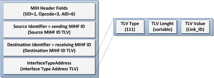
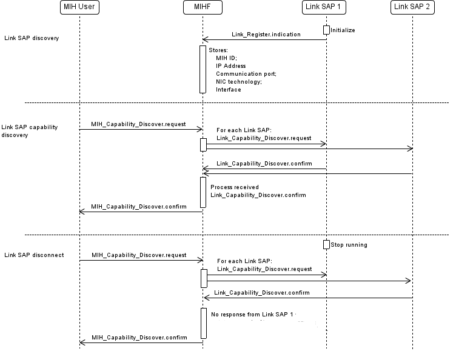
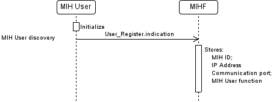

Internal communications are communications between the MIHF and local SAPs (users and link). ODTONE uses UDP sockets binded to the loopback interface (127.0.0.1) for exchanging messages between these entities.
Chapter 7 of the MIH standard defines the primitives that should be supported by an implementation. These primitives show how a SAP can interact with a MIHF.
Chapter 8, of the same standard, defines the message MIH protocol messages for remote communications (communications between MIHFs).
The ODTONE implementation uses the messages defined on chapter 8 to implement the primitives of chapter 7.
Please note that the MIHF sends confirm messages to SAPs and response messages to MIHFs, and that the MIH protocol allocates 16 bits for the MIH message ID, 2 of those are for the opcode. The opcode defines if a message is a request, response or indication. So, with 2 bits we can encode 4 values, 3 are already taken, this leaves 1 available combination for the missing confirm primitives. Confirm primitives set the opcode to 0 (zero).
There is a wrapper (tcp_listener) for handling TCP communications, but a method for reading from the configuration file and enabling TCP support, for the MIHF is not implemented.
The tcp_listener class was discussed in detail in a previous section.
The interval discovery refers to the procedure that allows one MIHF to discovery its Link SAPs and their capabilities and its MIH Users.
Link SAP Discovery
It is intent that a Link SAP is able to send information about itself to the MIHF, so that MIHF knows which technology and interfaces each Link SAP is responsible for. Thus, the “intelligence” about the capabilities of each network interface is the responsibility of their Link SAP and the MIHF asks for them when needed.
Because there is no primitive/message in the 802.21 standard that allows Link SAP to send that information to the MIHF was created a new message named “Link_Register.indication”. This message allows the Link SAP to send informations to the MIHF about which technology supports and which interface it manages. Associated with the creation of this new message type was also created a new TLV type named “Interface Type Addr TLV” whose correspondent data type is “Link ID”.

The mechanism of LinkS SAP discovery involves the discovery of Link SAPs and storage of information in the MIHF. It is also intended to detect the presence or absence of known Link SAPs. So the proposed mechanism involves three essential parts: register, presence and unlearning.

The register part begins when the Link SAP initializes and announces its presence to the MIHF by sending a Link_Register.indication message. The MIHF processes the message and learns about the Link SAP by storing its ID, IP Address, listening port, link-layer technology and list of link addresses. This will allow the MIHF to discovery Link SAPs dynamically and also allows the MIHF to know the information necessarily to redirect the messages to the respective Link SAPs in a efficient way.
When the MIHF retransmits a request to a given Link SAP, it waits a time interval for the response. If the response is received within the time interval the MIHF detects the presence of the Link SAP, ie, the MIHF knows that the Link SAP is still active and can be contacted. This correspond to the second part: the presence.
If the response is not received within the time interval it could mean that the Link SAP is not available anymore. Thus, the MIHF may unlearning the Link SAP. However, there are several reasons why the response is not received within the time interval, like delay in the network, packet lost, the Link SAP does not support the desired request, among other reasons. So, there must be a confirmation that the Link SAP is really down. When the MIHF does not receive the response message it register it as a fail response. When the number of fail response reachs a defined threshold the Link SAP is forgotten. If the MIHF receives a message from Link SAP it will reset its number of failing responses.
![[Note]](../../../../../doc/html/images/note.png) |
Note |
|---|---|
The waiting time interval for response message and how many fail responses before forget Link SAP can be defined at the MIHF configuration file. |
MIH User Discovery
It is intent that a Link SAP is able to send information about itself to the MIHF, so that MIHF knows the function of the MIH User, ie, if the MIH User is responsible for handling the handover operations in the local MIHF.
Because there is no primitive/message in the 802.21 standard that allows MIH User to send that information to the MIHF was created a new message named “User_Register.indication”. This message allows the Link SAP to send informations to the MIHF about its function. Associated with the creation of this new message type was also created a new TLV type named “MBB Handover Support TLV” whose correspondent data type is “BOOLEAN”.

The mechanism of MIH User discovery involves the discovery of Link SAPs and storage of information in the MIHF. The detection of the presence or absence of the MIH User is not applied.

The register part begins when the MIH User initializes and announces its presence to the MIHF by sending a User_Register.indication message. The MIHF processes the message and learns about the MIH User by storing its ID, IP Address, listening port and MIH User function in the MIHF. This will allow the MIHF to discovery MIH Users dynamically and also allows the MIHF to know the information necessarily to redirect the messages to the respective MIH User.
|
Note |
|---|---|
Only one MIH User for handling handover operations could exists in each MIHF. This way, the last MIU User to register with that function will be the MIH User that will handle the handover opeations. |
With the implementation of dynamic Link SAP discovery mechanisms, it was necessary that ODTONE supports multiple Link SAP. So, when a new request is received at the MIHF and whose destination is a Link SAP, the MIHF processes it and redirects the request to the proper Link SAP, based on the information collected by the internal discovery mechanism.
However, there are cases where the destination could be a set of Link SAPs. In those cases, the MIHF sends a message to all destinations Link SAPs and waits a time interval for all the responses of Link SAPs. After that time, the MIHF processes all informations received by the several confirm messages sent by the Link SAPs and sends the response to the requestor.
In order to optimize the process of subscription/unsubscription of events at the MIHF it was reduce the number of messages changed between the local entities, ie, between the MIHF and Link SAPs.
This way, when a MIH User requests for a event subscription the MIHF checks whether the event for the desired Link SAP is already subscripted. If it is already subscripted the MIHF responds immediately to the MIH User otherwise it request the subscription of the event to the Link SAP. When the MIHF receives the response of Link SAP and if the subscription was succeeded it stores the result and redirects the response to the MIH User.
The reasoning to optimize the process of unsubscription is similar to the subscription method. When a MIH User request to unsubscribe an event in a given Link SAP the MIHF unsubscribe it, response to the MIH User and checks if there are more subscriptions to that event. If there is no more subscriptions to that event the MIHF request unsubscription of the event at the Link SAP. This way, the Link SAP does not send that event information to the MIHF since there are no entities interested in that information.
Communications between local entities are made using MIH Protocol. All MIH_SAP primitives can be mapped in MIH Protocol Messages, however some of the MIH_LINK_SAP primitives needed new TLVs types so they can be used in the MIH Protocol.
The following table show the correspondence between MIH_LINK_SAP primitive and the new TLVs and its data type:
Table 22. ODTONE specific TLVs
|
MIH_LINK_SAP Primitive |
TLV Type Name |
TLV Type Value |
Data type |
|---|---|---|---|
|
LinkParametersRequest |
tlv_link_parameters_req |
102 |
LIST(LINK_PARAM_TYPE) |
|
LinkParametersStatusList |
tlv_link_parameters_status_list |
103 |
LIST(LINK_PARAM_TYPE) |
|
LinkStatesRequest |
tlv_link_states_req |
104 |
LINK_STATES_REQ |
|
LinkStatesResponse |
tlv_link_states_rsp |
105 |
LIST(LINK_STATES_RSP) |
|
LinkDescriptorsRequest |
tlv_link_descriptor_req |
106 |
LINK_DESC_REQ |
|
LinkDescriptorsResponse |
tlv_link_descriptor_rsp |
107 |
LIST(LINK_DESC_RSP) |
|
LinkAction |
tlv_link_action |
108 |
LINK_ACTION |
|
LinkActionResult |
tlv_link_ac_result |
109 |
LINK_AC_RESULT |
|
ScanResponseSet |
tlv_link_scan_rsp_list |
110 |
LIST(LINK_SCAN_RSP) |
|
MBBHandoverSupport |
tlv_mbb_handover_support |
111 |
BOOLEAN |